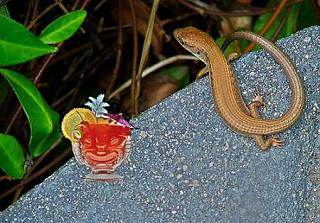
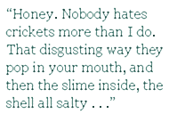

The foursome at the dinner table is unaware of the two pairs of eyes following their every move. If they would look into the furthermost corner, they would see them glow. But they don’t. They’re too busy dumping boxes of rice, dumplings, egg rolls, and various Chinese style slops on the living room table.
“Dude!” Ono-Romero whines. “They’ve got orange chicken now?”
“Honey,” his wife (if you can call it wife in this type of arranged marriage), T-Escort, whispers, pushing her nose into his side. “Your blood pressure. You’ve got to calm down.”
Ono-Romero sighs and lies down on his belly, stretching his hind legs out behind him.
“I know, I know. I just think it’s fucked up that they get sweet and sour, while we’re stuck here in the sand and it’s not even a beach.”
“We’ve got a heat lamp,” T-Escort suggests. “And a pool.”
Ono-Romero rolls his eyes.
“It’s not a pool! We’re supposed to drink from that thing!”
T-Escort stares at him.
“Euw!”
“Tell me about it. Thing is . . . I could do so much with this place if they’d let me. We could have a tiki lounge, some nice music — steel drums, probably — oh, and Mai Tais. Definitely Mai Tais.”
T-Escort rolls over on her side and leans her head against his belly.
“Mmmmm,” she says, her voice dreamy. “I would love a Mai Tai. Extra shot of Malibu.”
Ono-Romero winks.
“That could certainly spice things up around here.” He closes his eyes. “You know what, I have an idea. Let’s send those humans a pornographic message.”
T-Escort frowns and gets onto her feet.
“I thought we talked about this — ”
“Sorry, I mean telepathic.”
She lies back down again, slowly, wiggling her tail a little.
“You really think it’d work? They wouldn’t just bring us some nasty old crickets?”
Ono-Romero puts his front paw on hers.
“Honey. Nobody hates crickets more than I do. That disgusting way they pop in your mouth, and then the slime inside, the shell all salty . . .” he shivers. “Yuck. We should get a tax deduction for living off those. But T-Escort; if we work as a team, we can make Mai Tais happen.”
They lean their heads together, closing their eyes. As their minds connect with the humans, Ono-Romero chants “Mai Tais, extra Malibu, Mai Tais, extra Malibu,” over and over again, like a mantra. Escort hums.
“Maybe they’ll bring us a mouse this time,” T-Escort giggles at one point. “You seemed quite keen on that last time.”
“Are you kidding?” Ono-Romero snaps. “I had hair in my mouth for days! Now, Escort, if you’re not going to focus. . .”
“I am. Sorry.”
At first, the humans seem oblivious of their mental efforts. They keep chomping on their honey walnut prawns, not offering their thirsty prisoners one glance. But gradually, the scene changes The smallest one lifts his glass, sees that it’s empty, and refills it with orange juice. The one with two humps on its torso asks if any of the dishes have pineapple. Then, finally, the biggest one — the one with one large hump — stands up.
“You know what, folks?” he bellows. “I’m going to make us some good old-fashioned Mai Tais.”
Ono-Romero and T-Escort dance around in their tank, clasping each other’s front paws, flipping the pool over with their tails.
But when the human returns, his cocktail tray only has four of the magnificent cocktails. He places them all on the human table.
“Oh, no,” Ono-Romero whispers. “Please, no.”
The two-humped human approaches their tank.
“I think,” it says, “we should feed our lizard friends too.”
“Dragons!” Ono-Romero snaps. “Dragons, dragons, dragons! How would you like to be mixed up with a fucking second class reptile?”
“Sammie!” the two-hump calls in its most ludicrous baby talk, setting its Mai Tai down next to the tank. “Sammie! C’mon over here, you good old boy.”
Ono-Romero sulks while T-Escort roars with laughter.
“What kind of name is Sammy?” she manages between cramps.
When the baby talk voice calls “Angela,” she shuts her mouth.
An enormous hand flips the top open.
“How would you guys like some yummy crickets?” it asks. Turning to the one-humped, it continues “I had this weirdest sense suddenly that the lizards wanted something from us. And what could that possibly be if not crickets?”
“I don’t believe it,” Ono-Romero spits.
“’s OK,” T-Escort says. “Watch.”
She runs over to as close to the drink as she can get, rears up, and taps her claws on the glass.
The human frowns.
“What is it, Angela?”
T-Escort shuts her eyes in the deepest of concentrations.
“I...” the human starts. It lifts its Mai Tai, stands up the pool that the dragons knocked over, and pours an inch of the yellow fluid into it. Then it walks over to the table.
“Did you just feed the lizards a cocktail?” the smallest one asks. They all look over to the tank, where T-Escort is floating on her back in the pool while Ono-Romero sucks away at the drink like there’s no tomorrow.
“Yeah,” the two-hump says, rubbing its forehead. “And I’m thinking we should redecorate the tank one of these days. Would it be nice to give the little guys some sort of... tiki theme?”